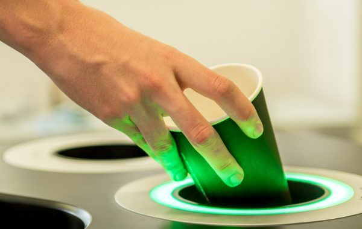
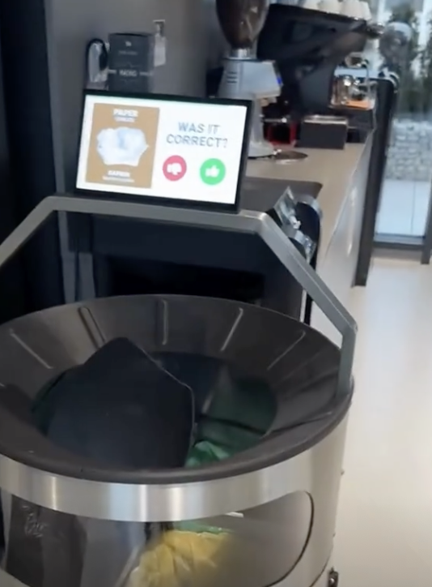
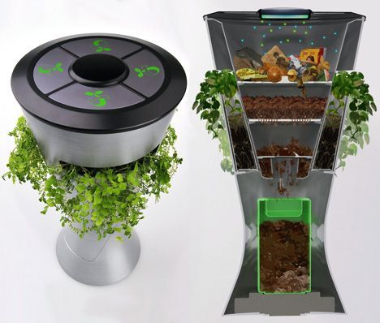
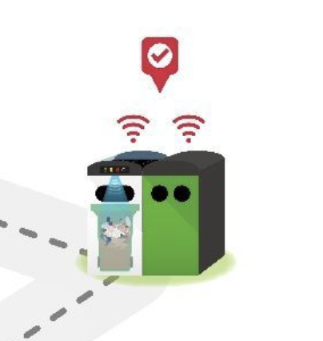
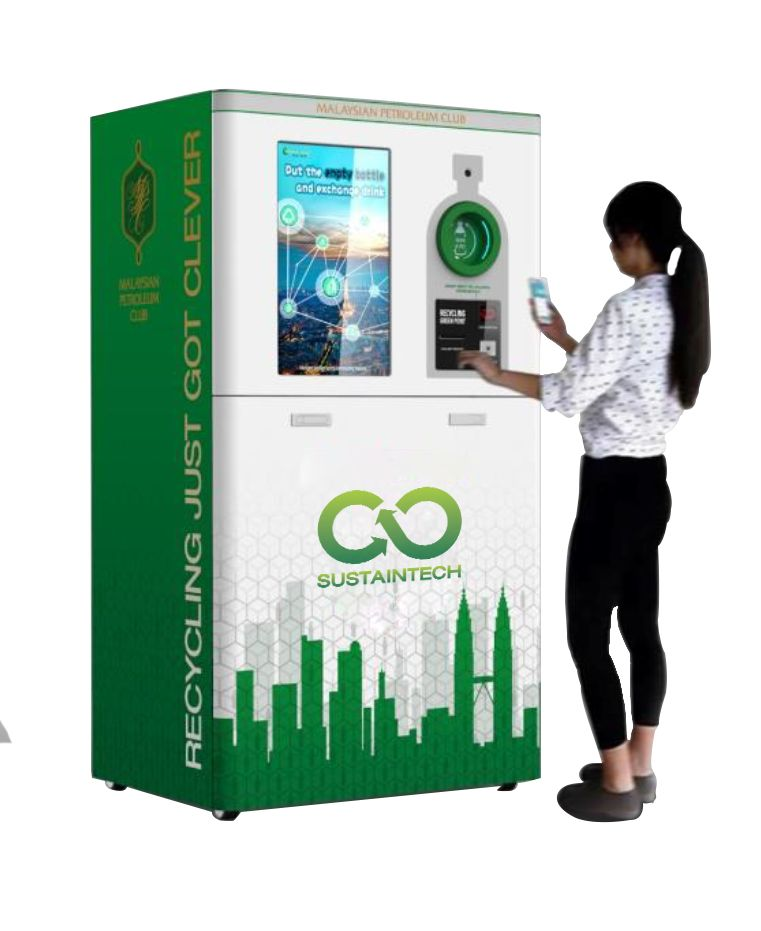
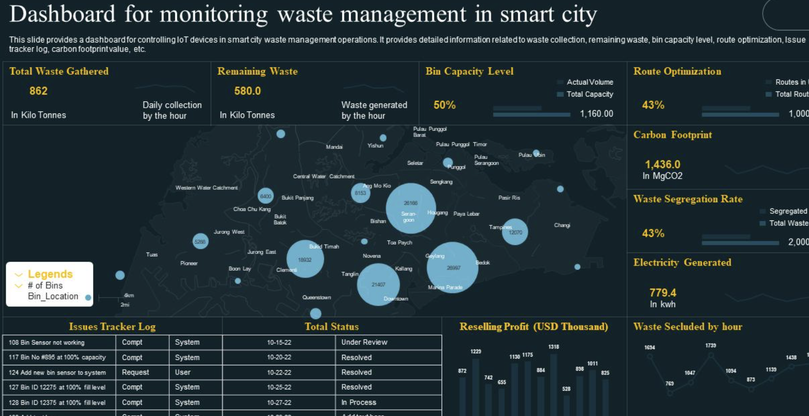
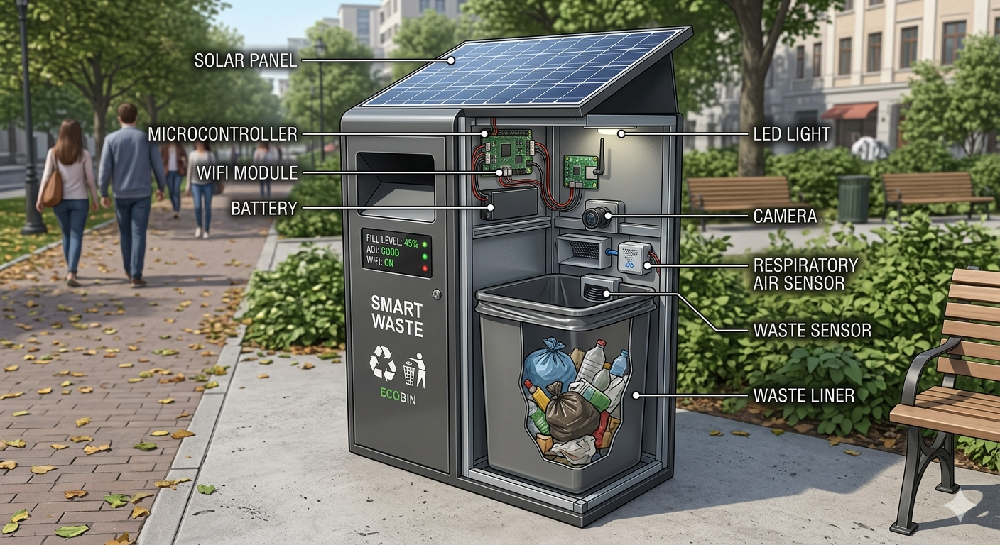

Smart bins are modern waste bins that use sensors and technology to help manage rubbish more efficiently. They can detect how full they are and sometimes even sort waste into different categories like recyclables, general waste, or food waste. This helps reduce pollution, improve recycling, and make waste collection easier and faster.


Waste is added to the smart bin, the smart bin will either automatically identify the type of waste or ask the user to identify it using a touch screen or similar.

Waste is sorted, sometimes cleaned and compacted, and sent to the correct recycling container.

Data relating to the type of waste, and other metrics such as the time of day, the amount of waste, and waste disposal habits are stored.

Once the smart bin is full, a notification is sent to a centralized control panel, usually accessed online or through an app.

Data stored by the smart bin can be accessed at any time from the central control panel.

Data analytics provided by the control panel can be used to understand waste trends and habits.
